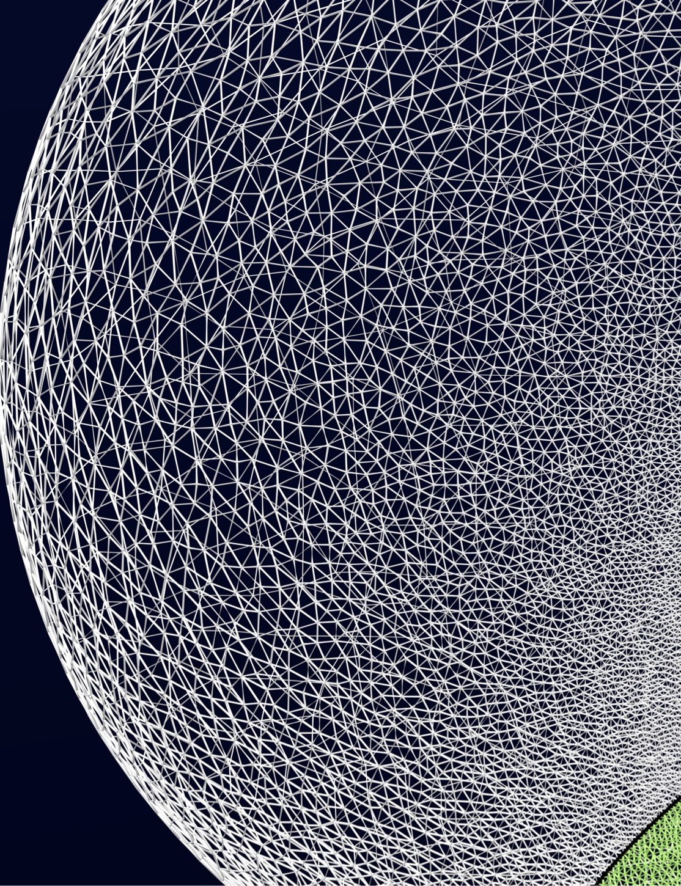

Written in 2014–2016 by Ken Arroyo Ohori.
ISBN: 978–1–326–59638–5
No copyright: This thesis is released into the public domain using the CC0 code. To the extent possible under law, I waive all copyright and related or neighbouring rights to this work.
To view a copy of the CC0 code, visit: http://creativecommons.org/publicdomain/zero/1.0/
Caveat: I am very happy to release my own text and figures without any restrictions whatsoever. As far as I am concerned, any attribution is very much appreciated but it is not required. However, this does not except anyone from following the academic practices on attribution as applicable to them. Also, I must note that throughout this thesis I have used several excerpts of others' text, images and code, which I have always been careful to mark as such. While I am myself allowed to use these excerpts under legal fair use doctrines in many countries and more specifically by the citation right (citaatrecht) in Article 15a of the Dutch Copyright Law (Auteurswet), this does not mean that you are also free to use these excerpts for any purpose.
Colophon: In its PDF form, this thesis was typeset with XeTeX 3.14159265–2.6–0.99992 (TeX Live 2015) using the Feijoa, GT Pressura and Asana Math typefaces. Most of the figures were created using OmniGraffle, Affinity Designer or Blender, often with the help of LaTeXiT. This HTML version is a transcription that follows more or less the style of the PDF.
The source code of this thesis is available at: https://github.com/kenohori/thesis
Cover: Model of a 4D house represented as a 4D cell complex. The cells of the model were manually defined and embedded in \(\mathbb{R}^4\), projected inwards/outwards to the volume of a 3-sphere (\(S^3\)), stereographically projected to \(\mathbb{R}^3\) and exported as an .obj file. This was then imported in Blender and rendered using a perspective projection down to 2D. See §9.3 for more details.
This is an HTML version of my PhD thesis, which I created in order to make my make it more acessible, to allow deep linking of sections and figures and to make it readable on small devices. If you have a big screen, want to print it or simply want to see it in a nicer format, have a look at the PDF (High-quality 200 MB / Low-quality 15 MB).